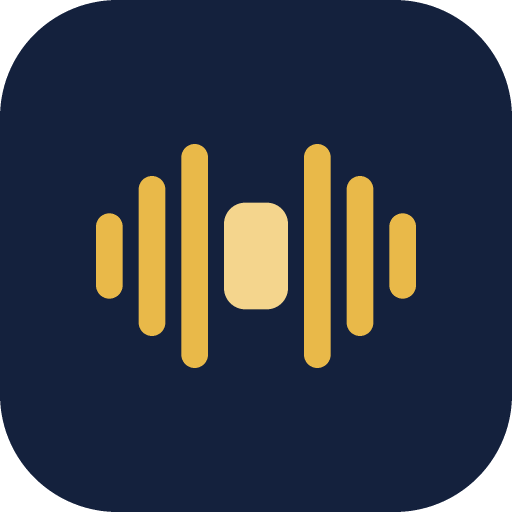

Política de Privacidade
Aplicativo Jarbas · atualizada em 16 de novembro de 2026
Esta política explica quais dados o aplicativo Jarbas ("Jarbas", "app") usa, para quê e onde eles ficam. O resumo é simples: o Jarbas não tem servidor próprio. Suas listas, lembretes e gastos ficam guardados no seu celular, e nós não recebemos, vendemos nem compartilhamos esses dados.
1. Dados que ficam no seu celular
Ficam só no armazenamento do app, no seu aparelho:
- suas listas e itens, lembretes, conversas com o Jarbas e configurações;
- seus gastos: valor, descrição, categoria, data e, se você permitir, o local da compra.
Se você desinstalar o app, esses dados são apagados, a não ser que você tenha feito um backup.
2. Microfone e voz
O Jarbas usa o microfone para ouvir seus pedidos, só enquanto a escuta está ligada. Um aviso fica visível na barra de notificações durante a escuta, e você pode desligá-la a qualquer momento.
- Palavra de ativação ("Jarbas"): é reconhecida no próprio celular, sem enviar áudio para a internet.
- Pedido depois da palavra de ativação: é transcrito pelo serviço de reconhecimento de voz do seu aparelho (no Android, normalmente o do Google), que pode processar o áudio na internet conforme a política de privacidade desse fornecedor. O Jarbas recebe só o texto e não grava o áudio.
3. Localização
Se você permitir, o Jarbas usa a localização para:
- anotar onde um gasto aconteceu e mostrá-lo no mapa;
- avisar um lembrete quando você chega a um lugar.
A posição fica salva só junto do gasto ou do lembrete, no seu celular. Para mostrar o nome do lugar, as coordenadas são enviadas ao serviço de endereços do sistema (no Android, o do Google). O mapa usa imagens do OpenStreetMap, que recebe só o pedido das imagens da região exibida. A localização é opcional: o app funciona sem ela.
4. Avisos de compra do banco (opcional)
Esse recurso é desligado por padrão. Se você ligar e liberar o "Acesso às notificações" do Android, o Jarbas passa a ler as notificações que chegam ao celular para encontrar avisos de compra, Pix e saque e anotá-los como gastos.
- Notificações sem valor em reais (R$) são descartadas na hora, sem serem guardadas.
- Os avisos com valor ficam numa fila no seu celular até o Jarbas decidir se viram gasto. Os de origem desconhecida esperam a sua revisão.
- Aplicativos de conversa (como WhatsApp e Telegram) e de e-mail nunca são lidos.
- O Jarbas não lê mensagens SMS diretamente. Ele só vê o aviso que o seu app de mensagens mostra na tela.
- Nada disso sai do seu celular.
Você pode desligar o recurso no Jarbas ou retirar o acesso nas configurações do Android a qualquer momento.
5. Backup no Google Drive (opcional)
Se você conectar sua conta Google, o Jarbas salva uma cópia dos seus dados no seu próprio Google Drive, uma vez por semana, na pasta "Jarbas (backups)". Ele guarda as 5 cópias mais recentes.
- O app pede só a permissão
drive.file, que dá acesso apenas aos arquivos que o próprio Jarbas criou. Ele não vê nem altera o resto do seu Drive. - O Jarbas usa o endereço de e-mail da conta escolhida só para mostrar em qual conta o backup está.
- Os backups ficam na sua conta Google, sujeitos à política de privacidade do Google. Nós não temos acesso a eles.
Você pode desconectar a qualquer momento no Jarbas, em Configurações, ou em myaccount.google.com/permissions. Os arquivos já salvos continuam no seu Drive até você apagá-los.
O uso de informações recebidas das APIs do Google segue a Política de Dados do Usuário dos Serviços de API do Google, incluindo os requisitos de uso limitado.
6. Separação de itens com IA (opcional)
Se você cadastrar a sua própria chave da API da Anthropic, o texto ditado para uma lista e o nome dela são enviados à Anthropic para separar os itens. Sem chave, a separação é feita no próprio celular.
7. Compartilhar e exportar
Quando você manda uma lista pelo WhatsApp ou exporta seus gastos, o Jarbas entrega o conteúdo ao app que você escolher. A partir daí, vale a política desse app.
8. O que não fazemos
- Não temos servidor e não coletamos dados de uso, análise ou publicidade.
- Não vendemos nem compartilhamos seus dados com terceiros.
- Não exibimos anúncios.
9. Seus direitos (LGPD)
Como seus dados ficam no seu celular e na sua conta Google, você tem controle total sobre eles: pode ver, corrigir, exportar e apagar tudo pelo próprio app ou desinstalando-o. Se tiver dúvidas, fale com a gente pelo contato abaixo.
10. Crianças
O Jarbas não é direcionado a menores de 13 anos e não coleta dados deles de propósito.
11. Mudanças nesta política
Se esta política mudar, a nova versão será publicada nesta página, com a data atualizada no topo.
12. Contato
Dúvidas ou pedidos sobre privacidade: fmello@gmail.com